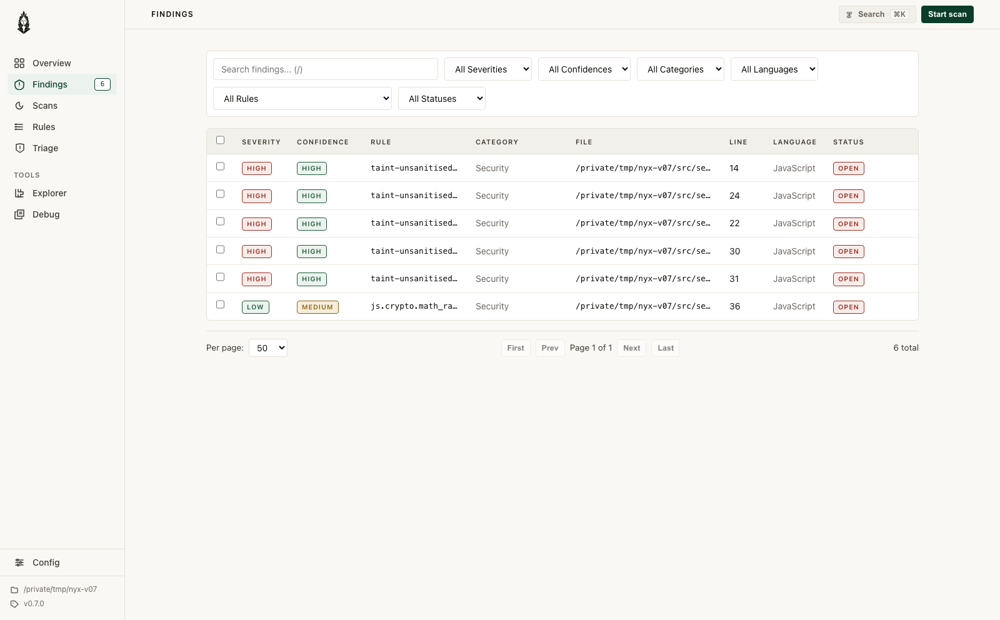
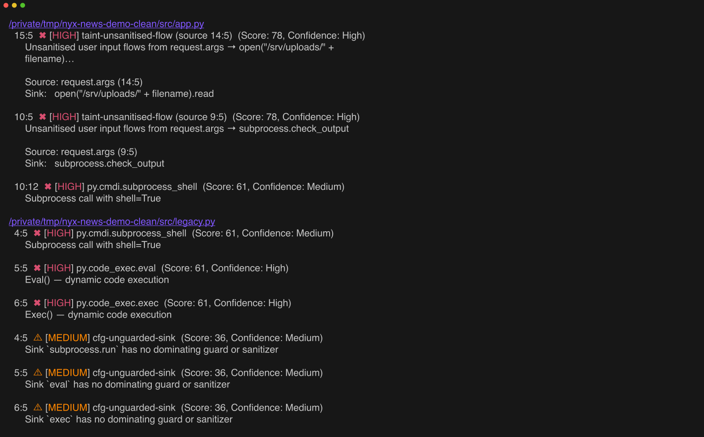

Nyx Agent is live.
Local pentests for dev apps: repo context, live checks, stored proof, and opt-in destructive runs.
Read moreLocal pentests for dev apps: repo context, live checks, stored proof, and opt-in destructive runs.
Read more
Seven new vulnerability classes, deeper FastAPI authorization tracking, parser hardening checks, and a quieter auth report.
Read more
Sensitive data sent to outbound HTTP calls is now tracked separately from SSRF, with calibration aimed at real leaks.
Read more
The SSA taint engine arrived, cross-file analysis got deeper, and nyx serve opened a local
browser workflow for triage.

Finding scores, lower-noise defaults, state analysis, and inline ignores made scan output easier to work through.
Read more
Custom rules, SARIF output, source-kind severity, non-prod downgrades, and resource leak detection landed together.
Read more
Two-pass cross-file taint analysis, CFG detectors, persisted function summaries, and multi-language analysis made the scanner more serious.
Read more
The first builds set the shape: tree-sitter parsing, a filesystem walker, SQLite-backed indexes, and the first Rust CFG experiments.
Read more